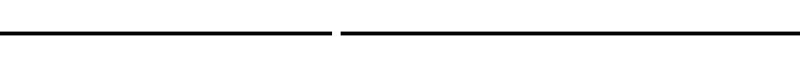
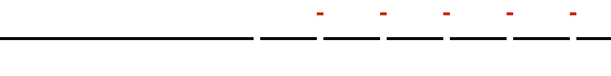
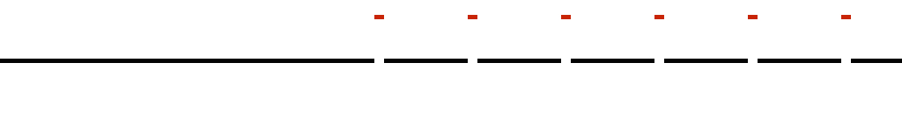

Warm-Ups
Case 1: A Line
Take the infinitely long line, and remove a single point, \(p\):
Is it possible to divide the broken line into subsets \(A\) and \(B\), and then move those subsets around, without changing their size or shape, so as to get an unbroken line?
Remarkably, the answer is “Yes!”. And showing how to do it will be a good warm-up exercise.
The trick is just like the one we use to make room for Onyeka in Hilbert’s Hotel.
Consider the points \(p+1, p+2, p+3, \ldots\). Those are together going to be subset \(A\). The rest of the line is subset \(B\)
In the diagram below, the points in \(B\) are coloured black, the points in \(A\) are coloured red, and a blank is left for \(p\):
The points in \(A\) will be a little easier to see if I move them up a bit:
The next step is to translate \(A\) one unit to the left.
When we look at the translated \(A\) and \(B\) together, it’s clear that they combine to form an unbroken line:
Success! We divided our broken line into two pieces, reassembled the pieces (without changing their size or shape), and ended up with an unbroken line.
Case 2: A Circle
Here’s a slightly harder problem. Think of a unit circle as a set of points, and consider the result of removing a single point \(p\) from our circle:
Can we separate the circle into two subsets \(A\) and \(B\), like we did for the line, and move them around without changing their size or shape so as to get an unbroken circle? Again, the answer is “Yes!”. The only difference is that this time we’ll have to be a little bit more clever about how we select \(A\) and \(B\).
To define \(B\), we’ll start going clockwise around the circle. The first point in \(B\) is the point \(p_1\) which is 1 unit clockwise from \(p\). The second point in \(B\) is the point \(p_2\) which is 2 units clockwise from \(p\). And so forth. The picture below represents the first seven points in \(B\):
Since the radius of our circle is one unit, we can prove that the points \(p_1, p_2, p_3, \ldots\) are all distinct. (We can prove, in other words, that if one starts at \(p\), moves one unit clockwise, then another unit clockwise, then another, and so forth, one will never return to a location one had already visited.)
(To see this, suppose otherwise. Suppose, in other words, that \(p_i = p_j\) for some \(i\) and \(j\) such that \(i <j\). Then it must be the case that you can get to \(p_j\) by starting at \(p_i\) and advancing \(j-i\) units clockwise. Since the circumference of the circle is \(2\pi\), this means that \(j-i = n \cdot 2\pi\), where \(n\) is some positive integer. But this is impossible, since \(2 \pi\) is an irrational number.)
So we have defined \(B\) and we know that it consists of infinitely many distinct points. We can now define \(A\) as whatever is left over after removing \(B\) from the circle.
The next step is to move the points in \(B\). But in this case the movement will consist of a rotation: we will rotate each point in \(B\) one unit counter-clockwise. The result of rotating \(p_1\) one unit counterclockwise is that it fills the hole left by \(p\), and the the result of rotating \(p_2\) one unit counterclockwise is that it fills the whole left by \(p_1\), and the result of rotating \(p_3\) one unit counterclockwise is that it fills the hole left by \(p_2\), and so on, for every \(p_n\).
Voilà! We have divided our broken circle into two pieces, reassembled them (whithout changing their size of shape), and ended up with an unbroken circle!
The Cayley Graph
Here is our trickiest challenge yet. We’re going to start with a certain set of points, divide it into finitely many parts, rearrange the parts, and end up with two copies of the original set of points.
The set of points we’re interested in consists of the vertices of a Cayley Graph. The best way to think of a Cayley Graph is as an infinite collection of paths. Each path starts from a central point, and is the result of taking an infinite sequence of steps. In the first step you advance one unit; in the second step you advance half a unit; in the third step you advance a quarter of a unit; and so forth. Each step is taken in one of four directions (up, down, right or left), with the restriction that one is forbidden from following opposite directions in adjacent steps. The result is this:

Now focus your attention on the set of vertices of the Cayley Graph — that is, the set consisting of the centre point, together with each of the points at which a path gets divided in three. Those are the points we're interested in.
What I would like to do is this. I’d like to divide that set of vertices into a finite number of parts, rearrange the parts without changing their size or shape, and end up with two copies of the vertices.
Unfortunately, that can’t quite be done. But we can come close: we can divide the those points into a finite number of parts, rearrange the parts changing sizes but not shapes, and end up with two copies of those points. (We’ll soon consider a slight variation of the Cayley graph, in which we can get everything we want.)
So, let us divide the vertices into finitely many parts! We’ll divide the Cayley graph into four “quadrants”: \(T\) (for top), \(B\) (for bottom), \(L\) (for left) and \(R\) (for right).
Now focus your attention on \(R\). \(R\) is actually a miniature version of the whole Cayley graph, minus the left quadrant. So one can generate a perfect copy of the whole Cayley graph by putting together an expanded copy of \(R\) with an ordinary copy of \(L\).
Similarly, one can generate a perfect copy of the whole Cayley graph by putting together an expanded copy of \(B\) with an ordinary copy of \(T\).
An animation of this process is below. As you’ll see, the original single graph is divided up. Quadrants \(R\) and \(B\) expand and connect with \(L\) and \(T\), respectively, to result in two Cayley graphs identical to the original.

We’re almost done. We have neglected a single point: the centre point. For we didn’t use that point in building our new copies of the Cayley graph, and our new copies both have centers. So we currently have no place to put the original centre point.
Fortunately, there is a trick that allows us to include it, and it’s similar to the trick we used earlier to turn the broken line into an unbroken line. Rather than dividing the original graph into four pieces, you can divide it into five, with the fifth piece consisting of the centre, together with all vertices that lie on the straight line going down from the centre. This allows us to build one of our two copies from: a) an expanded version of the top quadrant, b) the bottom quadrant except for the fifth piece, and c) a contracted version of the fifth piece. So we can do the whole thing properly with five pieces, two of which we expand, and one of which we shrink.
The Sphere
Cayley on a Sphere
We will now construct a modified version of the Cayley Graph — a version in which the graph is wrapped around the surface of the sphere.
As in the case of the original graph, our modified graph will consist in an infinite number of paths. Each path starts from a ‘center’, \(c\), which can be any point we like on the surface of the sphere.
You follow a path by starting at \(c\) and taking an infinite number of steps. Each step consists in rotating the sphere by a particular angle \(\theta\). As before, you’re allowed to take steps in four possible directions: you’re allowed to perform “up”, “down”, “left” and “right” rotations. And, as before, you’re never allowed to follow a step with its inverse.
Let me explain how these “up”, “down”, “left” and “right” rotations work. Imagine that you’re holding the sphere in your hand. (Or even better, go get a sphere, and follow along with it.) Say that the \(z\)-axis is the line that runs from the ground you’re standing on to the sky, through the centre of the sphere, and that the \(x\)-axis is a line orthogonal to the \(z\)-axis. To fix ideas, I shall assume that it is the line that runs from your left to your right through the center of the sphere.
“Left” and “Right” steps are rotations of \(\theta\) and \(-\theta\) degrees (respectively) about the \(z\)-axis. “Down” and “Up” steps are rotations of \(\theta\) and \(-\theta\) degrees (respectively) about the \(x\)-axis.
Now, as it turns out, careful choice of the rotation angle \(\theta\) delivers the following result: you can never get to the same point via different paths. (I won’t prove this, but one value for \(\theta\) that delivers this result is \(arccos(1/3)\).)
To see how this works, suppose you orient the sphere so that the \(z\)-axis passes through the sphere’s North and South poles, and suppose that a friend is standing in front of you with a pencil. Your ask your friend to place the tip of the pencil at point \(c\), which we’ll choose to be the point where the sphere’s Equator intersects its Prime Meridian.
Now suppose you start by rotating the sphere one step “Left”. In other words, you rotate the sphere \(\theta\) degrees about the \(z\)-axis. The result that the tip of your friend’s pencil has moved East of the Prime Meridian, and is now positioned on the sphere’s Equator at a longitude of \(\theta\) degrees East.
Next suppose you rotate the sphere one step “Down”. In other words, you rotate the sphere \(\theta\) degrees about the \(x\)-axis. The result is that the tip of your friend’s pencil has moved North of the equator, and is now positioned on the sphere at a latitude of \(\theta\) degrees North and a longitude of \(\theta\) degrees East.
Would you have ended up in the same place had you had first rotated the sphere one step “Down” and then rotated the sphere one step “Left”? Crucially, no.
This is what would have happened if you had rotated Down-Left, rather than Left-Down. After your first rotation, the tip of the pencil would have been located on the sphere’s Prime Meridian, at a latitude of \(\theta\) degrees North. But as you carried out your second rotation, the tip of the pencil would not have stayed at the \(\theta\) degrees North parallel, because the tip of the pencil always travels on a great circle and that parallel is not a great circle. (When \(\theta = arccos(1/3)\), and you rotate Down-Left, the tip of the pencil ends up about 52.21 degrees South and 12.75 degrees East of the location you would have ended up at after rotating Left-Down.)
(Here it is important to keep in mind that the axes of rotation are fixed by the environment in which the sphere is placed, rather than by particular points on the surface of the sphere. The \(z\)-axis, for example, will always point towards the sky, even if you rotate the sphere so that its north pole no longer points towards the sky.)
So we have a modified version of the Cayley Graph, wrapped up around a sphere. The set of vertices of our modified Graph is our ‘center’ point, \(c\), plus every point which can be reached from \(c\) by applying some finite sequence of rotations.
A crucial difference between our sphere-Graph and the original Cayley Graph is that, in the original Cayley Graph, our steps got smaller and smaller. (They had to, to avoid overlaps; if the steps were all the same size, then, for example, stepping left and then up would get you to the same point as stepping up and the left.) But on our sphere Cayley Graph, steps are always the same size. And since the rotation angle \(\theta\) is chosen so as to guarantee that you never get to the same point via different paths, we never get any overlaps!
(Here you might find it helpful to think back to Warm Up Case 2, above. The fact that our sphere-graph can have steps of the same size and never end up with overlaps is a sophisticated version of the fact that the circle in Warm Up Case 2 can have steps the same size and never end up with overlap.)
Duplicating Sphere-Cayley
Now for the amazing thing. The same procedure that we used earlier to duplicate the set of vertices of the original Cayley Graph can be used to duplicate the set of vertices of our modified graph. But in this case we do not need to change the size or shape of any pieces.
Just like the set of vertices of the original graph could be divided into quadrants, so the set of vertices of the modified graph can be divided into “quadrants”. (Why the scare quotes? Because the “quadrants” will be all mixed up with each-other, with points all over the sphere. But each quadrant is still well-defined. The “Top” quadrant of the sphere-Cayley, for example, is the set of points that you can get to following a path that starts from the centre and then an “Up” rotation.)
As before, the “Right” quadrant will have exactly the same shape as the set of vertices minus the “Left” quadrant, but this time it will also have exactly the same size! The only difference between the two is that they have different locations on the surface of the sphere. So if we were to rotate the entire Right quadrant \(-\theta\) degrees about the \(z\)-axis, we would get the entire set of vertices minus the Left quadrant. (And something analogous is true for each of the other quadrants.)
We can therefore decompose our set of vertices into finitely many parts, and reassemble the parts (without changing their shape or size) so as to get two copies of our vertices. All we need to do is carry out the following procedure. Start by dividing our sphere-Cayley-graph into quadrants. Then take the Right quadrant, rotate it (–\theta) degrees about the \(z\)-axis, and put it together with the Left quadrant. This gives us our first copy of (Cv_{S1}). Next, take the Top quadrant, rotate it (–\theta) degrees about the \(x\)-axis, and put it together with the Bottom quadrant. This gives us our second copy of (Cv_{S1}).
So we now have a way to duplicate a special set of points on the surface of a sphere. That isn’t quite duplicating the sphere; it’s not even duplicating the whole surface of the sphere, since not every point on the surface is in our sphere-Cayley-graph. But we’re getting closer. Read on…
Many Cayleys on a Sphere
Let us say that two points on the surface of our sphere are in the same orbit if and only if one can get from one to the other using a finite number of rotations of the sort described above. Clearly, that’s an equivalence relation, so these orbits partition the surface of the sphere.
Each orbit is, in effect, the set of vertices of a modified Cayley Graph, with one crucial difference: whereas modified Cayley Graphs have a designated centre, there is nothing about an orbit that tells us which of its points to count as its ’centre’. Let me explain.
In the case of an ordinary Cayley Graph you can tell which of the vertices is is the centre of the graph just by looking: it is the vertex surrounded by four paths of maximum length. When it comes to orbits, in contrast, no vertex looks special, because they are all generated by rotations of the same size. If you were standing on a given vertex and looked around at all your fellow vertices, you would see exactly the same sight as you would see if you were standing at any other vertex.
Since orbits have no natural centre, we will choose an arbitrary point from each orbit, and treat it as the orbit’s centre. (This requires the Axiom of Choice.)
Once we’ve chosen a centre for each of our orbits, each of our orbits becomes a modified Cayley Graph, wrapped around the sphere. And this allows us to divide the sphere into “quadrants”. The “top quadrant” of the sphere, for example, will be the union of “top quadrants” of sets of vertices of our infinitely many modified Cayley Graphs.
This gives us a procedure for duplicating the surface of the ball. Start by dividing into “quadrants”, as just described. Next, take the “right quadrant”, rotate it \(-\theta\) degrees about the \(z\)-axis, and put it together with the “left quadrant”. That gives us our first copy of the surface. Then take the “top quadrant”, rotate it \(-\theta\) degrees about the \(x\)-axis, and put it together with the “bottom quadrant”. That gives us our second copy of the surface.
And once we know how to duplicate the surface of the sphere, it is easy to duplicate the entire sphere. We can use the same procedure as before, but rather than working with points on the surface of the sphere, we work with the lines that connect the centre of the sphere with each point.
And there we have it! We’ve started with one sphere and got two! Bananas!
Some Annoying Complications
Actually, we haven’t quite finished, though we’ve said all the important things there are to say. There are still some irritating little complications to take care of.
The first complication is that we didn’t say what to do with the centre of the sphere. The second complication is that we didn’t say what to do with all the centres that we chose for all the Cayley graphs on the surface of the sphere. The third complication is that, depending on which points we pick as centres, it is possible for some points to both be a centre and be in one of the quadrants (this has to do with the fact that, whenever you rotate the sphere, the points at the axis of rotation don’t move, so if a centre is one of those points, it can be taken to itself by a rotation).
We take care of all these little complications using a trick something like the ones we used in the warm up cases, with the line and the circle: we pick a countable number of points, with all the possible problem points among them, in such a way that we can move them all into each other and leave no gaps. It is quite tricky to show that you can take care of all the problem points at once — I won’t prove it for you here — but it turns out that you can.
Notice that our trick requires that there be only countably many potential problem points, but that is so.